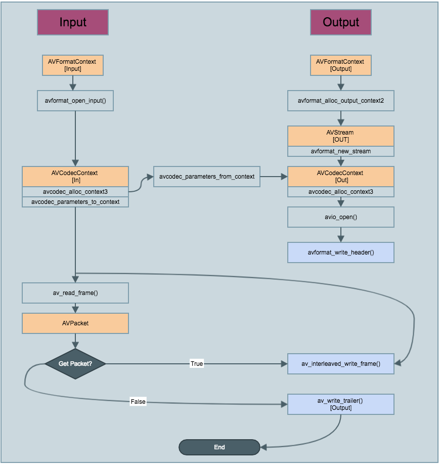

前言
天妒英才，不夸张的说，如果不知道雷霄骅，可能你音视频还没入门.借用新浪网友 @张新成010 的话。“你的博客纯粹是为了分享，写的很仔细，引领了多少人入门，在音视频方面有自己的见解，在当今音视频编解码封闭技术领域，你摒弃了别人的躲躲藏藏，无私奉献，你是伟大的，很多音视频方向的朋友称你为雷神，你无愧于这个称号！一个在大学里能静下心来做研究，又能无私分享的，尤其是在中国的大学里，你是难能可贵的佼佼者，至此以后，博客上不会再有更新，音视频的世界少了一颗将才。我已无语，痛心而疾，雷霄骅，雷神，感谢有你，天堂安好！”
本文参考了雷神的[总结]视音频编解码技术零基础学习方法以及 最简单的基于FFMPEG的封装格式转换器（无编解码）。
之所以想重新再写一下是因为现在FFmpeg已经出了是3.3，改动了蛮多,之前的代码继续跑会有点问题了。也是对自己学习的一个总结吧,记得刚学习的时候真的啥都不懂(现在也是略懂).看着雷神的文章慢慢入门的,获益匪浅。
看这边文章之前建议先看一下之前写的 iOS编解码入门篇(FFMPEG环境搭建)
一. 概念入门
我们经常下载的视频文件有mov,mp4,flv,音频文件有mp3等。大家知道这些到底是什么吗？

如图所示，这是一个从网上下载的视频文件到播放的一个流程图。简单理解，从协议层下来之后我们下载了一个视频文件，视频大家都知道,有声音和画面两部分组成。那么原始视频数据有YUV,RGB等等，音频有PCM等。如果我们不经过压缩,直接将数据封装成文件那么带宽服务器应该早就瘫痪了。这里就需要一套压缩视频和音频的技术。目前比较通用的视频压缩一般是H.264与H.265，音频压缩技术一般是用AAC.这样大家应该就理解了上图所示的编解码层与像素层.封装格式层像flv,mp4,avi等等。只是基于编解码层基础上封装了一些自己的格式。
MP4/RMVB/MKV/AVI这些属于封装格式。作用就是把视频和音频放到一块，相当于“容器”。其中可以放压缩编码的视频和音频。
mpeg4，H.264.H.265这些属于视频编码格式，是压缩编码视频的。
AAC，mp3些属于音频编码格式，是压缩编码音频的。
如果对几个视频文件的区别感兴趣可以看这篇文章mkv、rmvb、avi、MP4、flv、wmv特点和区别.
二. 几个常用类的介绍
| 常用类 |
意义 |
| AVFormatContext |
数据文件操作者,用于存储音视频封装格式中包含的信息。解封装格式的结构体 |
| AVOutputFormat |
输出的格式,包括音频封装格式,视频封装格式,字幕封装格式,所有封装格式都在AVCodecID这个枚举类型上面 |
| AVStream |
一个装载着视频/音频流信息的结构体,包括音视频流的长度,元数据信息，其中index属性用于表示视频/音频流 |
| AVCodecContext |
视频的基本参数,例如宽高等，存入音频的基本参数，声道，采样率等 |
| AVCodec |
编码器,设置编码类型，像素格式，视频宽高,fps(每秒帧数),用于编解码音视频编码层使用 |
| AVFrame |
原始数据,视频:YUV,RGB。音频:PCM. 宏块类型表，QP表，运动矢量表等数据 |
| AVPacket |
创建编码后的数据AVPacket来存储AVFrame编码后生成的数据 |
| 常用方法 |
意义 |
| av_register_all |
注册FFmpeg所有编解码器 |
| avformat_open_input |
FFMPEG打开媒体的的过程开始 |
| avformat_find_stream_info |
可以读取一部分视音频数据并且获得一些相关的信息 |
| av_dump_format |
打印: 输入格式的详细数据,例如时间,比特率,数据流,容器,元数据,辅助数据,编码,时间戳等 |
| avformat_alloc_output_context2 |
初始化一个用于输出的AVFormatContext结构体 |
| avcodec_find_encoder |
用于查找FFmpeg的编码器 |
| avcodec_find_decoder |
用于查找FFmpeg的解码器 |
| avformat_new_stream |
在AVFormatContext中创建Stream通道 |
| avcodec_alloc_context3 |
用AVCodec初始化AVCodecContext |
| avcodec_parameters_to_context |
使用AVCodecParameters来填充AVCodecContext |
| avformat_write_header |
Allocate the stream private data and write the stream header to an output media file |
| av_read_frame |
从输入文件中读取一个AVPacket |
三. 流程介绍
如图所示,本文描述的是一个无编解码过程的直接读取flv中的数据将其转换成mov的过程。

代码如下:
1
2
3
4
5
6
7
8
9
10
11
12
13
14
15
16
17
18
19
20
21
22
23
24
25
26
27
28
29
30
31
32
33
34
35
36
37
38
39
40
41
42
43
44
45
46
47
48
49
50
51
52
53
54
55
56
57
58
59
60
61
62
63
64
65
66
67
68
69
70
71
72
73
74
75
76
77
78
79
80
81
82
83
84
85
86
87
88
89
90
91
92
93
94
95
96
97
98
99
100
101
102
103
104
105
106
107
108
109
110
111
112
113
114
115
116
117
118
119
120
121
122
123
124
125
126
127
128
129
130
131
132
133
134
135
136
137
138
139
140
141
142
143
144
145
146
147
148
149
150
151
152
153
154
155
156
157
158
159
160
161
162
163
164
165
166
167
168
169
170
171
172
173
174
175
176
177
178
179
180
181
182
183
184
185
186
187
188
189
190
191
192
193
194
195
196
197
198
199
200
201
202
203
204
205
206
| @interface XXFFmpegRemuxer()
{
AVFormatContext *pInFormatContext;
AVFormatContext *pOutFormatContext;
AVOutputFormat *outputFormat;
AVPacket pPacket;
const char *in_filename;
const char *out_filename;
}
@end
@implementation XXFFmpegRemuxer
-(instancetype)init{
if(self = [super init]){
if (![self setEncode]) {
return nil;
}
}
return self;
}
- (BOOL)setEncode
{
avcodec_register_all();
AVCodec *H264Codec = avcodec_find_encoder(AV_CODEC_ID_H264);
if (H264Codec == nil) {
NSLog(@"编解码器不支持");
return NO;
}
AVCodecContext *codecContext = avcodec_alloc_context3(H264Codec);
if (codecContext == nil) {
NSLog(@"初始化编解码环境失败");
return NO;
}
codecContext -> width = 640;
codecContext -> height = 480;
codecContext->pix_fmt = AV_PIX_FMT_YUV420P;
codecContext->time_base.den = 25;
codecContext->time_base.num = 1;
if(avcodec_open2(codecContext, H264Codec, NULL) < 0) {
NSLog(@"打开编码器失败");
return NO;
}
return YES;
}
-(void)initBasicInfo:(NSString*) filePath{
in_filename = [filePath cStringUsingEncoding:NSUTF8StringEncoding];
NSString *outFileNameStr = [NSTemporaryDirectory() stringByAppendingPathComponent:@"mov2flv.flv"];
out_filename = [outFileNameStr cStringUsingEncoding:NSUTF8StringEncoding];
if([[NSFileManager defaultManager] fileExistsAtPath:outFileNameStr]){
[[NSFileManager defaultManager] removeItemAtPath:outFileNameStr error:nil];
}
}
-(void) movToFlv:(NSString*) filePath{
[self initBasicInfo:filePath];
int ret;
av_register_all();
if((ret = avformat_open_input(&pInFormatContext, in_filename, 0, 0))<0){
printf("Could not open input file!");
[self gotoEnd];
return;
}
if((ret = avformat_find_stream_info(pInFormatContext, 0))<0){
printf("Failed to retrieve input stream information!");
[self gotoEnd];
return;
}
av_dump_format(pInFormatContext, 0, in_filename, 0);
avformat_alloc_output_context2(&pOutFormatContext, NULL, NULL, out_filename);
if (!pOutFormatContext) {
printf("Failed avformat_alloc_output_context2");
[self gotoEnd];
return;
}
outputFormat = pOutFormatContext->oformat;
for (int i = 0 ; i< pInFormatContext->nb_streams; ++i) {
AVStream *in_stream = pInFormatContext->streams[i];
AVCodec *codec = avcodec_find_decoder(in_stream->codecpar->codec_id);
AVStream *out_stream = avformat_new_stream(pOutFormatContext, codec);
if (!out_stream) {
printf("Failed allocating output stream\n");
[self gotoEnd];
return;
}
AVCodecContext *pOutCodeContext = avcodec_alloc_context3(codec);
ret = avcodec_parameters_to_context(pOutCodeContext, in_stream->codecpar);
if (ret < 0) {
printf("Failed to copy context input to output stream codec context\n");
[self gotoEnd];
return;
}
pOutCodeContext->codec_tag = 0;
if (pOutFormatContext->oformat->flags & AVFMT_GLOBALHEADER) {
pOutCodeContext->flags |= CODEC_FLAG_GLOBAL_HEADER;
}
ret = avcodec_parameters_from_context(out_stream->codecpar, pOutCodeContext);
if (ret < 0) {
printf("Failed to copy context input to output stream codec context\n");
[self gotoEnd];
return;
}
}
av_dump_format(pOutFormatContext, 0, out_filename, 1);
if (!(outputFormat->flags & AVFMT_NOFILE)) {
ret = avio_open(&pOutFormatContext->pb, out_filename, AVIO_FLAG_WRITE);
if (ret < 0) {
printf("Could not open output file %s ", out_filename);
[self gotoEnd];
return;
}
}
ret = avformat_write_header(pOutFormatContext, NULL);
if (ret < 0) {
printf("Error occurred when opening output file\n");
[self gotoEnd];
return;
}
int frame_index = 0;
while (1) {
AVStream *in_stream,*out_stream;
ret = av_read_frame(pInFormatContext, &pPacket);
if (ret < 0) {
printf("Error av_read_frame\n");
break;
}
in_stream = pInFormatContext->streams[pPacket.stream_index];
out_stream = pOutFormatContext->streams[pPacket.stream_index];
pPacket.pts = av_rescale_q_rnd(pPacket.pts, in_stream->time_base, out_stream->time_base,
AV_ROUND_NEAR_INF | AV_ROUND_PASS_MINMAX);
pPacket.dts = av_rescale_q_rnd(pPacket.dts, in_stream->time_base, out_stream->time_base,
AV_ROUND_NEAR_INF | AV_ROUND_PASS_MINMAX);
pPacket.duration = av_rescale_q(pPacket.duration, in_stream->time_base, out_stream->time_base);
pPacket.pos = -1;
ret = av_interleaved_write_frame(pOutFormatContext, &pPacket);
if(ret < 0){
printf("Error muxing packet\n");
break;
}
printf("Write %8d frames to output file\n",frame_index);
av_packet_unref(&pPacket);
frame_index ++;
}
av_write_trailer(pOutFormatContext);
[self gotoEnd];
}
-(void) gotoEnd{
int ret = 0;
avformat_close_input(&pInFormatContext);
if (pOutFormatContext && !(pOutFormatContext->flags & AVFMT_NOFILE)) {
avio_close(pOutFormatContext->pb);
}
avformat_free_context(pOutFormatContext);
if (ret < 0 && ret != AVERROR_EOF) {
printf("Error occurred.\n");
return;
}
}
@end
|
最后我们可以看到输出结果如下:
[libx264 @ 0x103027200] using cpu capabilities: ARMv8 NEON
[libx264 @ 0x103027200] profile High, level 3.0
Input #0, mov,mp4,m4a,3gp,3g2,mj2, from '/var/containers/Bundle/Application/47E7540E-3936-400B-A86A-B9ED01BF661F/XXAudioVideo.app/sintel.mov':
Metadata:
major_brand : qt
minor_version : 512
compatible_brands: qt
encoder : Lavf56.36.100
Duration: 00:00:26.19, start: -0.012000, bitrate: 1185 kb/s
Stream #0:0(eng): Video: h264 (High) (avc1 / 0x31637661), yuv420p, 848x480, 1056 kb/s, 25 fps, 25 tbr, 12800 tbn, 50 tbc (default)
Metadata:
handler_name : DataHandler
encoder : Lavc56.41.100 libx264
Stream #0:1(eng): Audio: aac (LC) (mp4a / 0x6134706D), 48000 Hz, stereo, fltp, 127 kb/s (default)
Metadata:
handler_name : DataHandler
Output #0, flv, to '/private/var/mobile/Containers/Data/Application/B765D126-7DFF-4CBB-915F-B558AE46CDB8/tmp/mov2flv.flv':
Stream #0:0: Video: h264 (High), yuv420p, 848x480, q=2-31, 1056 kb/s
Stream #0:1: Audio: aac (LC), 48000 Hz, stereo, fltp, 127 kb/s
Write 0 frames to output file
Write 1 frames to output file
Write 2 frames to output file
Write 3 frames to output file
....
...
Write 1874 frames to output file
Write 1875 frames to output file
Error av_read_frame
参考目录
- 最简单的基于FFMPEG的封装格式转换器（无编解码）